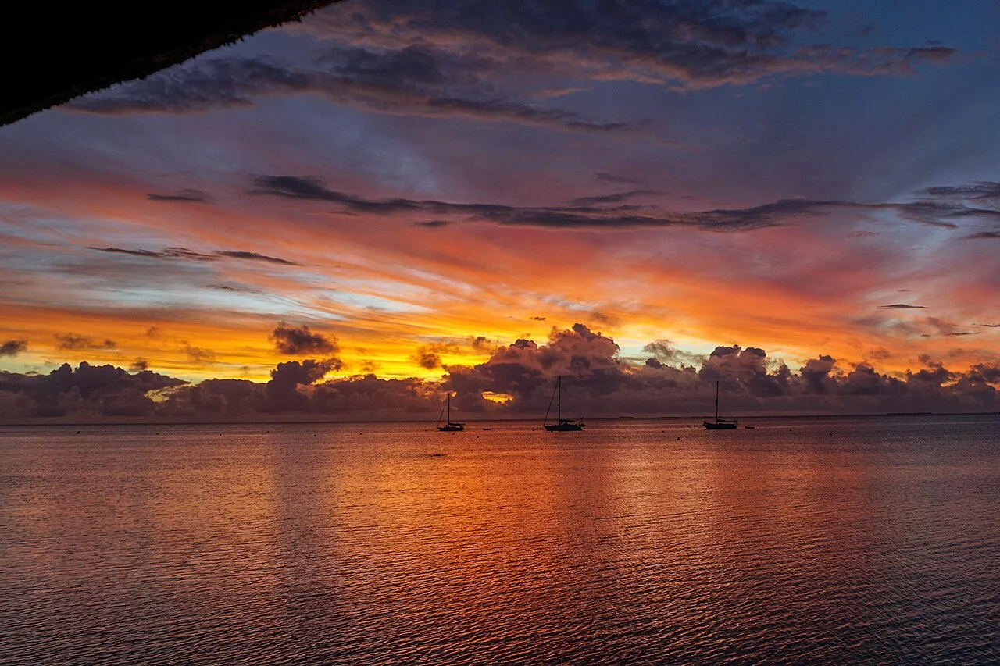

Îlot Maître — Nouméa
Nouméa, Nouvelle-Calédonie · snorkeling, kitesurf, windsurf

Îlot de 700 m sur 150 m dans le lagon de Nouméa, au cœur d’une réserve marine de 200 hectares, entouré d’un récif de corail. Des bateaux-taxis font la navette depuis l’Anse Vata. Près du ponton, les herbiers peu profonds (1 à 2 m) attirent des tortues vertes ; Snorkeling Report juge le spot accessible aux débutants par temps calme. Sur la côte est, le lagon exposé aux alizés sert au kitesurf, à la planche à voile et au wing foil. À Nouméa, la mer est à environ 27 °C en janvier (Climats et Voyages).
- Lieu
- Nouméa, Nouvelle-Calédonie
- Niveau
- Variable selon les conditions
- Activités
- snorkeling, kitesurf, windsurf
- Type d'eau
- Mer / océan
- Coordonnées
- -22.33, 166.41 (position approximative du secteur)
Dangers à connaître
- Le récif devant le ponton est sur le passage des bateaux qui accostent : signale-toi.
- La côte est, exposée aux alizés, est fréquentée par les kitesurfeurs quand il y a du vent.
- Réserve marine : tortues vertes, et parfois requins de récif à pointes blanches et raies. Garde tes distances.
- Les cyclones se forment de novembre à mi-mai, plus probables de fin décembre à début avril.
Le conseil d'Ocean Buddy
Pour le snorkeling, choisis les herbiers et le récif près du ponton. Évite la zone plate à l’est, face à l’hôtel, quand il y a du vent : les kitesurfeurs s’y retrouvent.
Ouvrir dans Ocean Buddy Télécharger sur l'App Store
Source : Fiche Ocean Buddy · décembre 2026 · d’après Wikipédia (îlot Maître), Snorkeling Report et Climats et Voyages · à vérifier localement.